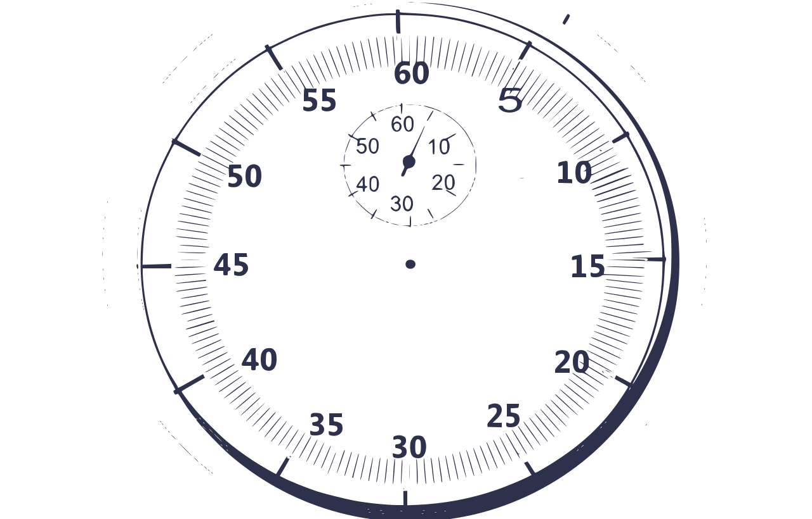

<p class="h1-responsive text-center mb-4 header">Pomodoro</p>
<div class="container pomodoro-container">
  <mdb-badge
    *ngIf="freeTrialService.timer.phase==='NOT RUNNING'"
    danger="true" class="pomodoro-tag">Not running
  </mdb-badge>
  <mdb-badge
    *ngIf="freeTrialService.timer.phase==='PAUSE'"
    success="true" class="pomodoro-tag">Pause
  </mdb-badge>
  <mdb-badge
    *ngIf="freeTrialService.timer.phase==='WORK'"
    warning="true" class="pomodoro-tag">Work
  </mdb-badge>


  <div class="view">
    


    <div class="mask flex-center waves-effect waves-light rgba-teal-strong">
      <p
        *ngIf="freeTrialService.timer.phase==='NOT RUNNING'"
        class="customTimer text-danger"
      > {{freeTrialService.timer.timeLeft}}</p>
      <p
        *ngIf="freeTrialService.timer.phase==='PAUSE'"
        class="customTimer text-success"
      > {{freeTrialService.timer.timeLeft}}</p>
      <p
        *ngIf="freeTrialService.timer.phase==='WORK'"
        class="customTimer text-warning"
      > {{freeTrialService.timer.timeLeft}}</p>
    </div>

  </div>
  <button *ngIf="!freeTrialService.timer.started" type="button" class="btn btn-primary btn-rounded  my-button"
          (click)="freeTrialService.startPomodoro()">START
  </button>
    <button *ngIf="freeTrialService.timer.started" type="button" class="btn  btn-primary btn-rounded  my-button"
            (click)="freeTrialService.timer.pause()">RESET</button>

</div>
